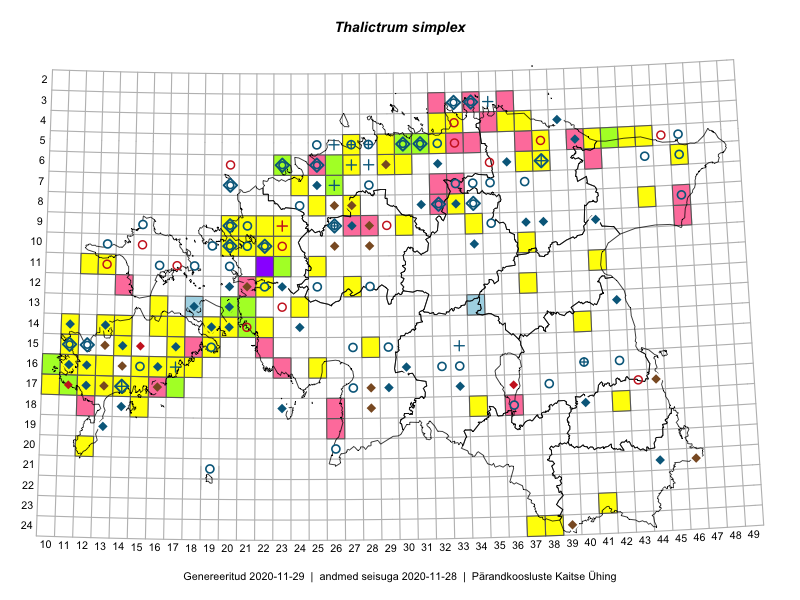

Thalictrum simplex
Uuendatud: 2016-12-01
Kaardile koondatud taksonid: Thalictrum simplex L.

Kaart põhineb 77 kirjel, neist vaatlusi 76 ja eksemplare 1.
Kuvatud viited 20 esimesele andmebaasikirjele, ülejäänud PlutoFis
- Rein Kalamees, Kersti Püssa: 2015-08-31: 04-32: ala
- Rein Kalamees: 2015-08-09: 05-31: ala
- Peedu Saar, Elle Roosaluste: 2015-07-12: 13-20: ala
- Toomas Kukk, Peedu Saar: 2014-07-03: 14-21: ala
- Peedu Saar, Liina Oja: 2015-07-20: 08-44: ala
- Rein Kalamees, Kersti Püssa: 2015-09-01: 05-30: ala
- Rein Kalamees, Kersti Püssa: 2015-08-10: 05-32: ala
- Rein Kalamees, Kersti Püssa: 2015-05-31: 04-37: ala
- Peedu Saar: 2015-09-07: 16-17: ala
- Meeli Mesipuu: 2015-07-11: 14-19: ala
- Thea Kull, Eerik Leibak: 2015-07-22: 05-42: ala
- Meeli Mesipuu, Timo Luhamäe: 2015-07-24: 05-41: ala
- Eeva-Maria Jeletsky, Tarmo Niitla: 2015-06-27: 11-12: ala
- Eeva-Maria Jeletsky, Tarmo Niitla: 2015-06-28: 11-13: ala
- Ott Luuk, Peedu Saar: 2015-08-26: 09-21: ala
- Ott Luuk, Peedu Saar: 2015-08-24: 12-22: ala
- Eeva-Maria Jeletsky, Tarmo Niitla: 2015-07-16: 24-37: ala
- Erkki Otsman, Sergei Smirnov: 2015-06-22: 07-24: ala
- Meeli Mesipuu: 2015-06-21: 15-19: ala
- Meeli Mesipuu: 2015-06-21: 15-19: GPS punkt